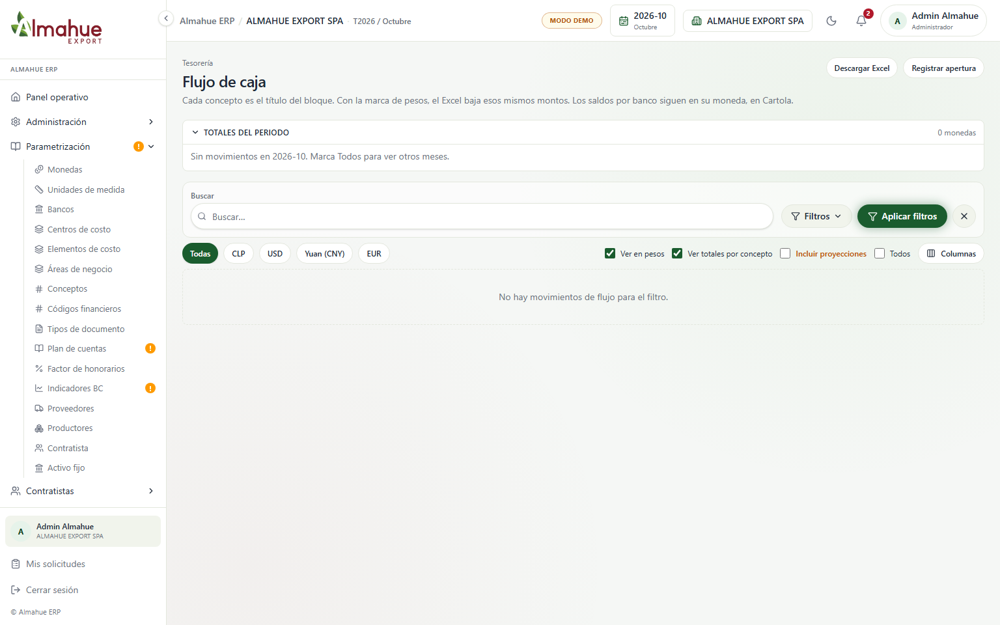
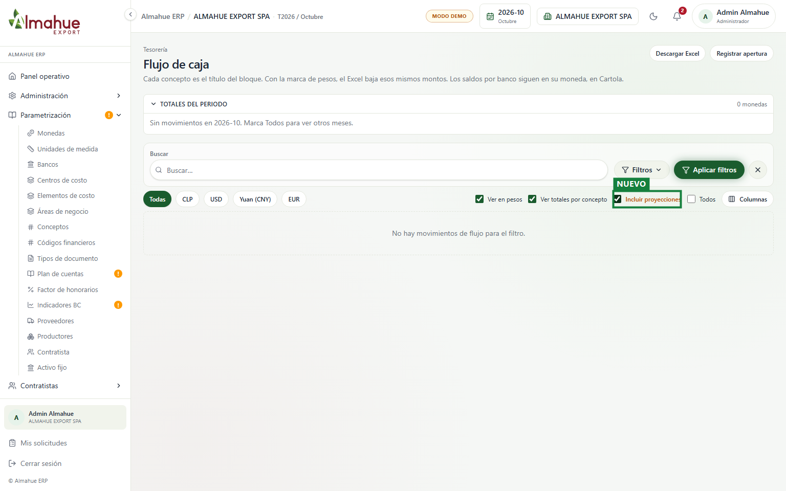
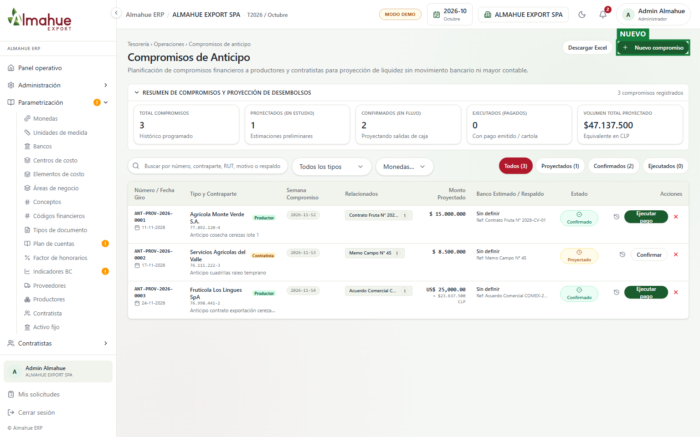
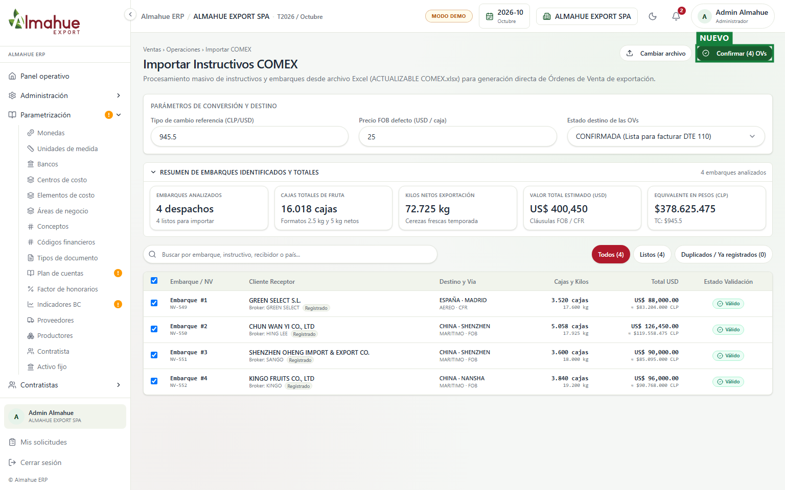

izquierda / derecha: antes y después. + y - : zoom. Esc cierra
Almahue Export SpA, sesión demo y periodo 2026-08. El recuadro verde y la etiqueta NUEVO están solo en la captura para destacar la funcionalidad incorporada. Un clic abre la imagen en el visor interactivo. La rueda del ratón o las teclas + y - hacen zoom. Las teclas izquierda y derecha alternan entre el antes y el después. Esc cierra el visor.


Se incorporó el control para incluir proyecciones de compromisos de anticipos a productores, contratistas y proveedores. Permite modelar escenarios de liquidez sin generar asientos en el libro mayor ni registros prematuros de banco.

Permite ingresar compromisos financieros asignados a productores con filtro estricto de esProductor, contratistas o proveedores, con fecha estimada de giro y semana de compromiso. Incluye trazabilidad completa del evento.

Procesa las hojas Embarques y Nota De Venta del archivo Excel, detecta duplicados por número de embarque y consolida cajas, kilos y montos en dólares para generar Órdenes de Venta confirmadas con RUT receptor 55.555.555-5 listas para emitir Factura de Exportación 110.